ISP Environmental Solutions Pvt. Ltd.
Smart Recycling Master Portal • Administrator Documentation
ISP Master Portal
Complete Dashboard Guide (A to Z)
Every menu, screen, button and workflow of the Smart Recycling Master Dashboard for the public RVM fleet and the PecoDrop corporate kiosk fleet: sign-in and roles, monitoring, machines, point rules, signage, recyclers, rewards, corporate clients, ESG reporting, security and database operations.
Portal: https://isprvm.binishaqsoft.com (browser title "ISP Environmental Solutions - Smart Recycling Master Dashboard")
Connected systems: RVM public kiosks (RVMDesktopApp), PecoDrop enterprise kiosks (PecoDropDesktopApp), Trash to Cash mobile app, touchless claim web page
Audience: ISP super administrators, system administrators, fleet operators, technicians, analysts and desk operators.
Edition: 17 October 2026 • Prepared from the current source code of the portal and verified in the live application. Screenshots were taken on a development copy with sample data.
1. What the Master Portal manages
The Master Portal is the single control centre for ISP's recycling network. It receives telemetry and sessions from every kiosk, holds the recycler accounts and points, manages corporate client tenants, pushes point rules and video signage to the machines, and produces operational, ESG and compliance reports. All production data lives in PostgreSQL; the legacy MongoDB clusters are read-only sources used only for one-way synchronisation into PostgreSQL.
| Fleet | Kiosk | Materials | Typical sites |
|---|
| Public RVM (machine type RVM_NEW; legacy counters RVM_OLD) | Single-aperture reverse vending machine with portrait touch screen | 🧴 Plastic bottles, 🥫 cans, 🧃 UBC / Tetra Pak cartons (S / M / L), rejects | Malls, metro stations, commercial hubs, parks |
| PecoDrop (machine type PECODROP) | Dual-display enterprise kiosk with QR scanner, keypad and three shaped apertures | ⭕ Plastic bottles, 🔺 cans, 🟦 office paper (weighed in kg) | Corporate campuses, banks, factories, universities |
2. Signing in, sessions and passwords

Figure 1 – Login card "ISP Environmental Solutions – Smart Recycling Portal".
- Open https://isprvm.binishaqsoft.com. The portal is a progressive web app: in Chrome or Edge you can install it ("RVM Master") for a full-screen experience.
- Enter Username or Email and Password, keep Remember me ticked to stay signed in on that browser, and press Sign In.
- Forgot password? has no self-service flow: "Please contact system administrator to reset credentials". A super admin resets passwords from Access & Security.
- Sessions last 24 hours; after that you are returned to the login card. Sign Out is in the navbar.
- Password rule for every account type: at least 8 characters. Accounts can be active, pending_approval ("Your Corporate Client account is pending approval from ISP Environmental Solutions…") or suspended ("Account Suspended. Please contact system administrator.").
- The master developer account (default username onenet) is configured on the server; it is a super admin and cannot be deleted or demoted.
3. Roles and what each role can see
| Role (identifier) | Menus (modules) | Action rights |
|---|
| Super Admin / Master Dev (super_admin) | Everything, including Database Connections, Backups & Restore, Access & Security, raw tables | view, edit, export, delete, manage users, switch DB |
| System Administrator (admin) | Executive Overview, Rewards & Leaderboards, Machine Health, Enterprise Accounts, Analytics & Reports, ESG, Digital Signage, Users, Recycler Community | all except switch DB (cannot grant super admin) |
| Corporate Client Admin (client_admin) | Scoped to their organization: Executive Overview, Machine Health, Digital Signage, Rewards & Leaderboards, ESG, Analytics & Reports; plus Sub-Users / Manual Intake when those modules are enabled on the role | view, edit, export, manage sub-users; no delete |
| Corporate Sub-User (corporate_sub_user) | Overview, Machine Health, Rewards, ESG, Analytics & Reports for their delegated kiosks only | view, export |
| PecoDrop Service Technician / RVM Field Technician | Overview, Machine Health, Analytics & Reports | view, edit, export |
| RVM Fleet Operator (fleet_operator) | Machine Health, Overview | view, edit, export |
| Analytics & Operations Analyst | Overview, Rewards, ESG, Analytics & Reports | view, export |
| Customer Support Specialist | Feedbacks, Users | view, edit |
| Manual Intake / Desk Operator (desk_operator) | Manual Intake Desk only (fixed ISP Eco theme) | view, edit |
Menus are driven by the module list stored on each role (editable in Access & Security → Role Access Matrix). The lists above are the current defaults.
4. Portal layout
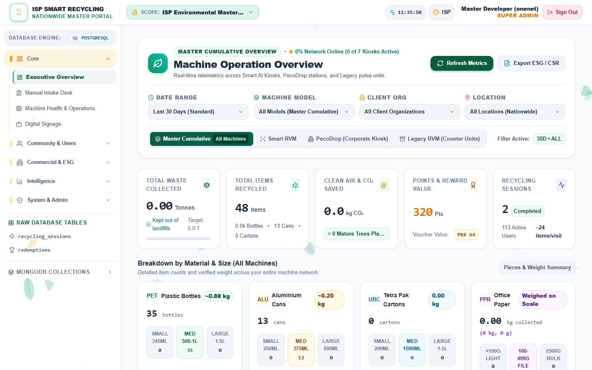
Figure 2 – Sidebar (left), navbar (top) and the Executive Overview.
4.1 Sidebar (exact labels)
| Section | Items |
|---|
| Core – "Core Operations" | Executive Overview • Manual Intake Desk • Machine Health & Operations • Digital Signage |
| Community & Users – "Public & Mobile" | Recycler Community (corporate users see "Recycler Activity") • Rewards & Leaderboards |
| Commercial & ESG – "Enterprise & CSR" | Enterprise Accounts • ESG & Carbon Impact |
| Intelligence – "Data & Reports" | Analytics & Reports |
| System & Admin – "System Governance" | Access & Security (RBAC) • Smart Recycling Machines • Smart Recycling Configurations • Users • Database Connections • Backups & Restore |
| Raw Database Tables (super admin) | recycling_sessions • redemptions (PostgreSQL); a collapsed "MongoDB Collections" group for the legacy source |
Only one section is open at a time. Super admins also see the Database Engine pill (🐘 PostgreSQL) and the PG host in the sidebar footer.
4.2 Navbar
- Title "ISP SMART RECYCLING – NATIONWIDE MASTER PORTAL" (or the selected corporate client's dashboard title and logo).
- Switch Enterprise Client Scope (ISP roles): a searchable list of all client organizations ("Search client, venue, city..."). Choosing a client scopes every tab to that client's kiosks and staff; "ISP Environmental Master" returns to the whole network. Corporate users instead see a fixed "Organization Fleet:" or "Assigned Kiosks:" label.
- Master Color Themes (palette button): ISP Eco Vanguard (default), ISP Enterprise Portal, Cyber Emerald, Ocean Sapphire, Neon Violet, Light Luxe. Corporate users receive their organization's theme automatically.
- Live clock, network health (polled every 15 s), role badge and Sign Out.
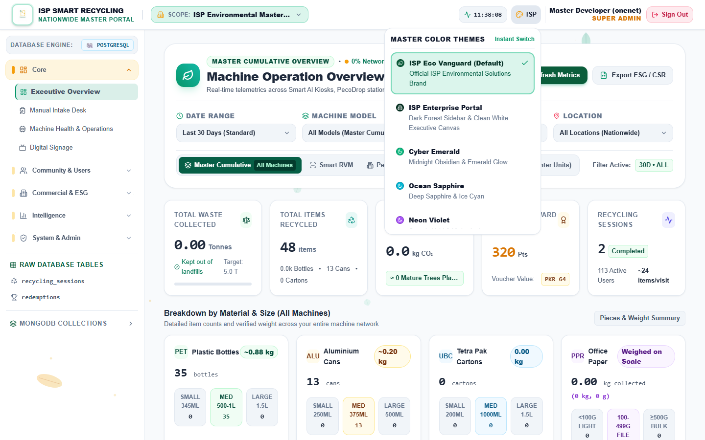
Figure 3 – "MASTER COLOR THEMES" menu.
5. Executive Overview
The landing page. Use the filter row to define the scope, then read the KPI tiles and material cards. Data refreshes automatically every 30 seconds.
| Control | Options / behaviour |
|---|
| Date Range | Today (Past 24h) • Yesterday • Last 7 Days • Last 30 Days (Standard, default) • This Month (Current Cycle) • All Time (Audited Records) |
| Machine Model | All Models (Master Cumulative) • Smart RVM • PecoDrop (Office 3-Chamber Kiosk) • Legacy RVM (Old Counter Units) |
| Client Org | All Client Organizations • ISP Environmental Master • each enterprise client |
| Location | All Locations (Nationwide) • Lahore • Karachi • Rawalpindi • Islamabad |
| Scope buttons | Master Cumulative • Smart RVM • PecoDrop (Corporate Kiosk) • Legacy RVM (Counter Units) – also sets the station filter used by other tabs |
| Refresh Metrics / Export ESG / CSR | Manual refresh • "Export Sustainability Report" as Executive PDF (print dialog) or Excel / CSV file ISP_Sustainability_Overview_<date>.csv |
- KPI tiles: Total Waste Collected (tonnes, progress against a 5.0 t target), Total Items Recycled, Clean Air & CO₂ Saved (kg), Points & Reward Value (with "Voucher Value" = points × PKR 0.20), Recycling Sessions.
- Material cards: Plastic Bottles (Small 345 ml / Medium 500 ml–1 L / Large 1.5 L), Aluminium Cans (250 / 375 / 500 ml), Tetra Pak Cartons (200 ml / 1 L / 1.5 L; Smart RVM only), Office Paper (kg; Light <100 g / File 100–499 g / Bulk ≥500 g; PecoDrop only).
- Sections: daily deposit trend chart, waste share, machine status summary ("Operational & Ready" vs "Needs Emptying / Tech"), recent sessions, live alerts.
6. Manual Intake Desk
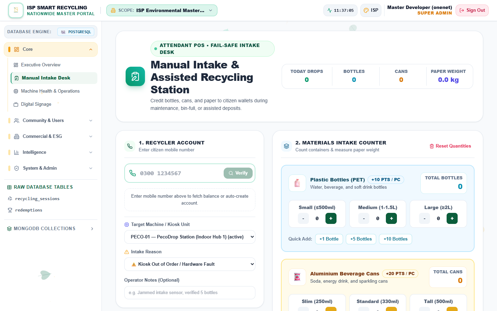
Figure 4 – "Manual Intake & Assisted Recycling Station".
Used by reception or desk staff to credit a recycler when a kiosk is out of order or for bulk drops. Available to ISP admins, client admins, desk operators and any account whose role has the manual_intake module; machines are limited to the operator's assigned fleet.
- 1. Recycler Account: enter the mobile number (03xx xxxxxxx) and press Verify. Registered recyclers show Current Wallet, Total Drops, Bottles and Cans; an unregistered number shows "Unregistered Citizen Number" and an optional name ("Account will be auto-created…").
- Select the Machine / Unit (a kiosk or "MANUAL-DESK-COUNTER (Reception / Main Desk)") and the Intake Reason: Kiosk Out of Order / Hardware Fault, Bin Full / Storage Capacity Reached, Scheduled Maintenance / Service, Bulk / Office Paper Drop, Attendant Assisted Deposit, Other Manual Intake. Add notes if needed.
- 2. Materials Intake Counter: bottles Small (≤500 ml) / Medium (1–1.5 L) / Large (≥2 L) with +1 / +5 / +10; cans Slim (250 ml) / Standard (330 ml) / Tall (500 ml); paper net weight in grams with +250 g / +500 g / +1.0 kg; Tetra Pak / UBC cartons.
- Points are calculated automatically (plastic ×10, cans ×20, paper 15 per kg, cartons ×10). Tick Custom Eco-Points Override to enter a different total. The summary shows Total Units, Total Weight, Avoided CO₂, Reward Credit and the Citizen Wallet Projection.
- Press Credit & Complete Deposit. A receipt modal with Print Receipt appears; the deposit is written as a recycling session (ID prefix DESK-) and logged in the "manual_intake_logs" ledger below (Timestamp, Citizen, Machine / Unit, Materials, Points, Reason, Operator; Refresh Ledger shows the last 50 entries).
7. Machine Health & Operations
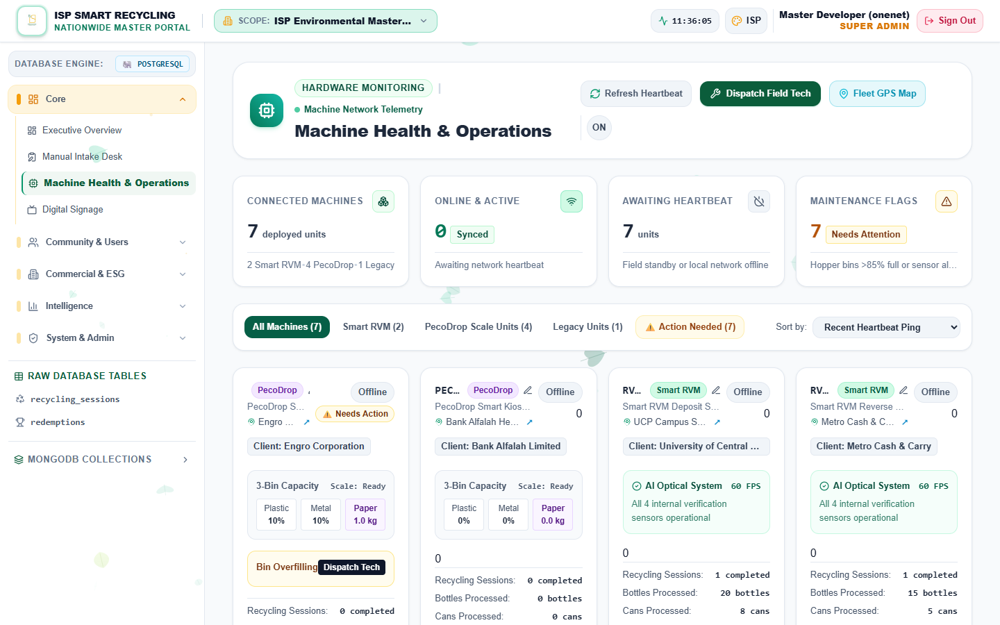
Figure 5 – Fleet status KPIs and machine cards.
- KPIs: Connected Machines, Online & Active, Awaiting Heartbeat, Maintenance Flags. A machine is ONLINE when its last heartbeat is within 60 seconds. Refreshes every 10 seconds; Refresh Heartbeat forces a reload.
- Machine card: status pill (Online / Bin Full / In Session / Fault / Offline), 3-Bin Capacity (Plastic / Metal / Paper), Relay Counter Bridge, AI Optical System, Sessions / Bottles / Cans / Paper / Points Issued, Public IP / Local IP, "View GPS on Google Maps", and the edit icon "Edit Machine Configuration". A bin warning appears when plastic or metal fill ≥85 %, paper ≥12 kg, or the kiosk reports BIN_FULL; the server records HIGH_BIN_FILL alerts at ≥80 % and CRITICAL_BIN_FULL at ≥95 %.
- Sort by Recent Heartbeat Ping / Highest Volume Processed / Bin Fill Level; filter by machine model tabs; Fleet GPS Map opens the map view.
- Edit Machine Configuration: name (e.g. "Smart RVM V2 (Food Court)"), location, latitude / longitude, type (Smart RVM (Multi-Sensor Optical) / PecoDrop (Count & Weigh) / Legacy Counter (Pulse)), client assignment, and the per-machine points sync form (plastic / can / glass S / M / L and paper per kg) which is pushed to that kiosk on its next 15-second config poll. Only ISP admins can register new machines; client admins can edit machines in their fleet.
- Machine Maintenance & Emptying History table with Export Service Log (CSV ISP_Machine_Maintenance_Logs_<date>.csv).
Dispatch Field Tech opens the "Dispatch Service Technician" form (machine, service task, notes). In the current build this creates a local log entry on your screen only; no work order is sent to anyone. Use your maintenance ticketing process in parallel.
8. Digital Signage
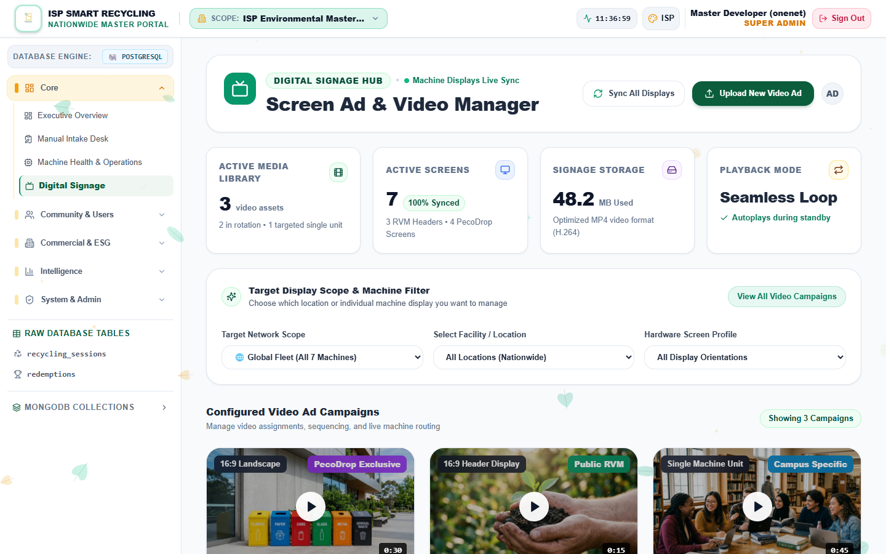
Figure 6 – "Screen Ad & Video Manager" with campaign cards.
- Filters: Target Network Scope (Global Fleet / Public RVM Fleet / Corporate PecoDrop Fleet), Select Facility / Location, Hardware Screen Profile (All / 16:9 Landscape (PecoDrop) / 16:9 Header Display (Public RVM) / Single Standalone Display).
- Upload New Video Ad: Campaign Title, Hardware Category (Public RVM / PecoDrop Exclusive / Campus Specific), Screen Profile, target (All / All PecoDrop / All Public RVM / Specific Kiosks), Video Source = file (MP4 or WebM; recommended 1080p H.264 under 50 MB; server limit 250 MB; also .avi .mov .mkv .m4v accepted) or URL.
- Campaign card actions: Push to Screen(s) (makes it the active playlist for the destinations), Change Machines ("Delegate Machines & Broadcast Target": All Screens / All PecoDrop (Dual Screens) / All Public RVM (Header Displays) / Specific Kiosks), preview (1920×1080), delete. Sync All Displays (ISP admins) forces every kiosk to re-pull its playlist.
- How it reaches the kiosks: each kiosk polls its playlist every 15 seconds, downloads new files into its Ads\Advertisements folder and removes portal-downloaded files that were taken out of the playlist. Corporate users only see and manage campaigns of their own organization. Kiosk instruction videos are not managed from the portal; they are files on the kiosk.
9. Recycler Community
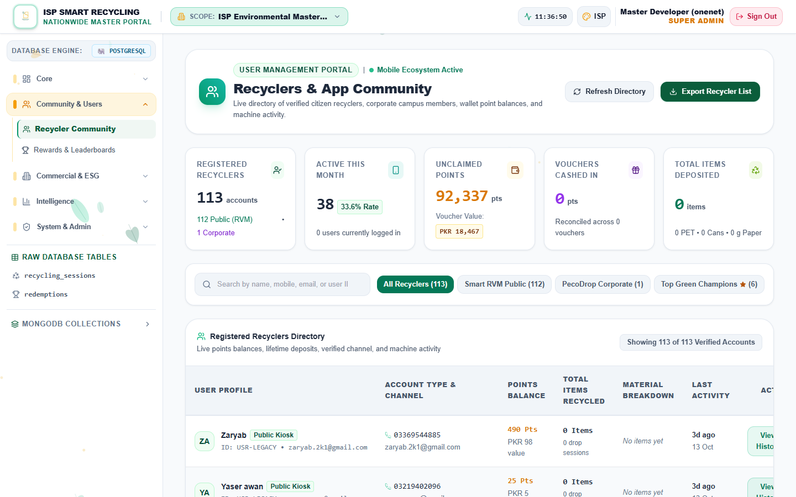
Figure 7 – "Recyclers & App Community" directory.
- KPIs: Registered Recyclers, Active This Month, Unclaimed Points, Vouchers Cashed In, Total Items Deposited, Top Champions. Segments Public / Corporate; search by name, mobile, email or user ID. Refreshes every 20 seconds.
- Open a recycler to see Active Balance, Redeemed, Paper Recycled, Total Sessions, the session history and voucher redemptions.
- Export CSV ("Export Recycler List") → ISP_Recyclers_Directory_<date>.csv.
- For a corporate scope the tab becomes "Corporate Client Roster – Corporate Workplace Members & Staff Directory": roster entries not yet linked to an app account show "Pending App Link / Awaiting App Sign-in" with the Authorized Staff ID, Assigned Department and Official Email, and the instructions employees need to link (section 21).
10. Rewards & Leaderboards
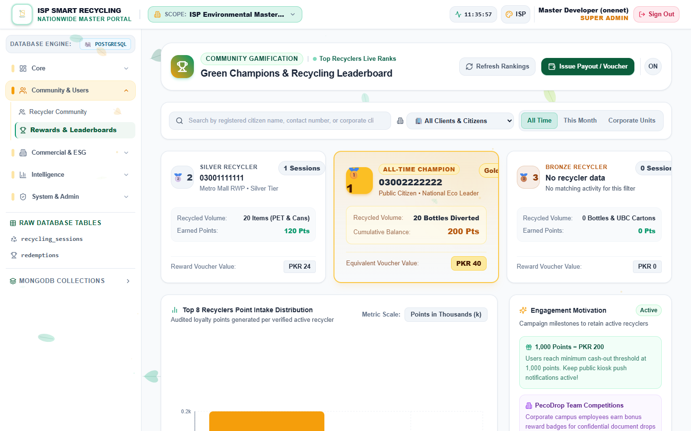
Figure 8 – "Green Champions & Recycling Leaderboard".
- Leaderboard scopes: all time, this month, corporate, citizens; client picker; search. Columns: Rank, User Details, Contact Identifier, Sessions, Bottles, Cans / Cartons, Points Earned, Voucher Value (points × PKR 0.20), Action. Non-admin viewers see masked phone numbers.
- Issue Cash Payout & Reward (row action or "Issue Payout / Voucher"): recipient phone and name, payout method EasyPaisa Wallet / JazzCash Wallet / Mobile Airtime Top-Up / Retail Merchant E-Voucher / Raast Instant Pay, amount presets PKR 500 (2,500 pts), 1,000 (5,000 pts), 2,500 (12,500 pts), 5,000 (25,000 pts) or a custom amount (minimum PKR 50, maximum PKR 100,000), note. Conversion 5 points = PKR 1. The recycler must hold enough points; the deduction is atomic. "Admin Courtesy Overdraft / Milestone Grant" credits without deducting points and is allowed for super admins only. The payout is recorded in the redemptions ledger with a reference code (EP-, JC-, LOAD-, RAAST- or VOUCH-PKR<amount>-XXXX); the money transfer itself is executed outside the portal by the finance team.
- Broadcast Notification ("Push & SMS Campaign Announcement"): audience Top 10 Green Champions / All Active Kiosk Citizens / PecoDrop Corporate Campus Employees plus a message. In the current build the portal only acknowledges the request; no SMS or push gateway is connected.
11. Enterprise Accounts (corporate clients)
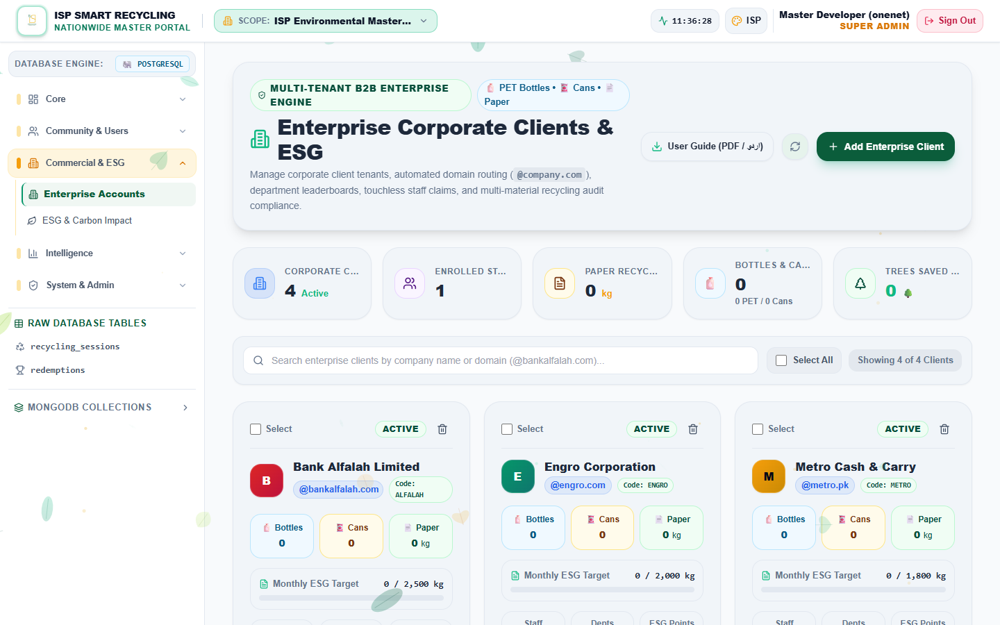
Figure 9 – "Enterprise Corporate Clients & ESG": KPI row and client cards.
- KPIs: Corporate Clients, Active, Enrolled Staff, Paper Recycled, Bottles & Cans, Trees Saved (ESG). Refresh Clients; search by name or domain; link "User Guide (PDF / اردو)".
- Client card: selection checkbox, status pill, logo, name, @domain, "Code: <company code>" (used by employees in the mobile app), Bottles / Cans / Paper, Staff / Depts / ESG Points, buttons Personalize Fleet, Depts & Roster, print ESG certificate, and (super admin only) the red delete button. Select All + delete performs a bulk delete.
11.1 Create an organization
Fill Company / Organization Name*, Corporate Email Domain* (for auto-routing of employees who sign in with a work email), Contact Email, Contact Phone, Monthly Target (Total kg Diverted, default 2000), Monthly Points Pool (default 200000), Logo URL. The portal generates the organization ID (ORG_<DOMAIN>_<number>) and sets the status to active. Super admin only.
11.2 Personalize Fleet
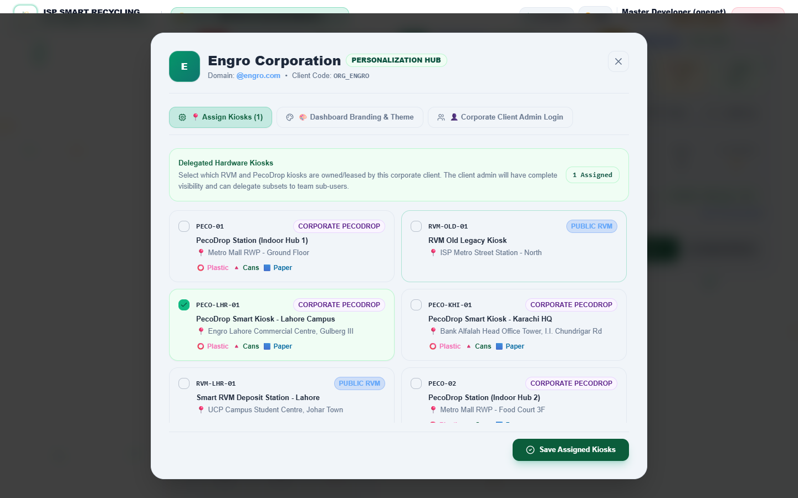
Figure 10 – "PERSONALIZATION HUB": Assign Kiosks, Dashboard Branding & Theme, Corporate Client Admin Login.
- Assign Kiosks ("Delegated Hardware Kiosks"): tick the machines that belong to the client and Save Assigned Kiosks. The binding replaces the client's previous list; machines removed from the list return to ISP Environmental Master. Client admins' fleet scope is updated automatically. Super admin only.
- Dashboard Branding & Theme: Personalized Dashboard Title, Corporate Client Logo URL, Welcome Greeting Message, Primary Brand Accent Color (Emerald / Sapphire / Crimson / Violet / Amber / Sky), Default Interface Theme (one of the six themes). Applied to the client's portal at their next login.
- Corporate Client Lead Administrator: Username*, Full Name*, Official Email, password (≥ 8 characters). Creates or updates the client_admin account, active immediately. Super admin only. Hand the credentials to the client securely and ask them to change the password.
11.3 Depts & Roster
- Departments table (Department, Manager, Staff, PET, Cans, Paper, Total Mass, Points) and + Add Dept (name, manager, monthly target kg).
- Staff roster (Employee Name & Email, Department, Employee ID, PET, Cans, Paper, Points Earned, Access Method).
- Bulk CSV Onboarding: paste rows in the order Full Name, Email Address, Department, EmployeeID, Phone (header row optional; up to 5,000 rows). Email is mandatory; a missing Employee ID is generated as EMP-####; unknown departments are created ("General" if blank). Re-importing the same (organization, employee ID) updates the entry.
- Print ESG Certificate produces the "Corporate Sustainability Certificate" print view.
Deleting a client (super admin only) removes the organization, its departments, its client admin and sub-user accounts, and unbinds its kiosks (they return to ISP Environmental Master). Machines and recycling history are never deleted. Confirm the client's name before deleting; this cannot be undone from the portal.
12. ESG & Carbon Impact
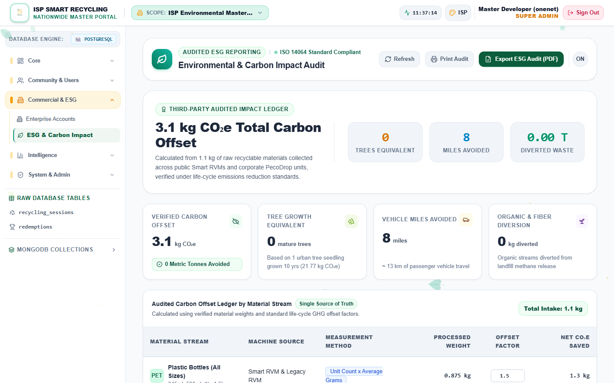
Figure 11 – "Environmental & Carbon Impact Audit".
- KPIs: Verified Carbon Offset (kg CO₂e), Tree Growth Equivalent (kg ÷ 21.77), Vehicle Miles Avoided (kg ÷ 0.40), Organic & Fiber Diversion.
- "Audited Carbon Offset Ledger by Material Stream": Material Stream, Machine Source, Measurement Method, Processed Weight, Offset Factor (editable per browser; Reset Standards restores defaults), Net CO₂e Saved.
- Default factors: weight per bottle 0.025 kg, per can 0.015 kg; CO₂e per kg Plastic 1.50, Aluminium 9.10, Paper 2.90, Tetra / cardboard 3.10, Organic 0.50.
- Export ESG Audit (PDF) → "ISO 14064 Compliance Certificate" modal: Verified PDF Report (print) or CSV Data Ledger ISP_ESG_Carbon_Audit_<date>.csv; Print Audit.
13. Analytics & Reports
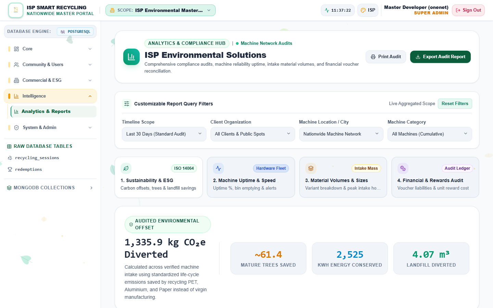
Figure 12 – "Analytics & Compliance Hub".
Filters: Timeline Scope, Client Organization, Machine Location / City, Machine Category. Sections: Audited Environmental Offset (trees saved, kWh conserved, landfill diverted), material units, Daily Carbon Avoided Velocity, Corporate CSR Equivalents, Network Machine Availability, Machine Reliability, PecoDrop Load Cells, Live Alerts, Recycled Stream Share, Variant Sizes & Quantity Distribution, points reconciliation. Export as Executive PDF or Excel CSV ISP_Compliance_Analytics_Report_<date>.csv.
Important: in the current build this tab is a presentation template. Its figures are illustrative values scaled by the timeline, not live database results, and the calibration / anomaly audit logs are placeholders. Use Executive Overview, ESG & Carbon Impact and Machine Health for audited numbers until this hub is connected to live data.
14. Access & Security (RBAC)
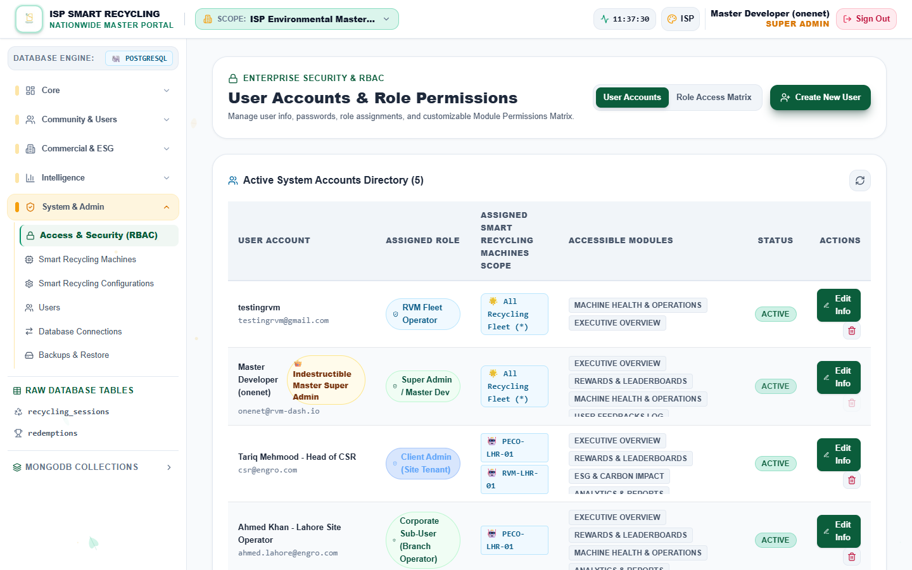
Figure 13 – "User Accounts & Role Permissions".
- User Accounts table: User Account, Assigned Role, Assigned Smart Recycling Machines Scope, Accessible Modules, Status, Actions. Create User & Assign Role: Full Name, Username, Initial Password (≥ 8), Email, Assigned Role, machine scope ("🌟 All Fleet Machines (*)" or specific machines). Edit: new password (optional), Account Status Active / Suspended, role, scope. Delete removes the account. Only a super admin can create or edit super_admin accounts; the master account cannot be deleted or demoted.
- Role Access Matrix: role cards with Administrative Action Rights (View, Edit, Export, Delete, Users, Switch DB) and Assigned System Menus. Add New Role / edit: Role Name, Role Identifier (Key), Badge Color Theme, description, rights, module checklist. Built-in super_admin and fleet_operator roles cannot be deleted; only a super admin may modify the super_admin role.
- Passwords are stored hashed; existing plaintext passwords are upgraded automatically at the user's next login.
15. Smart Recycling Machines (fleet registration)
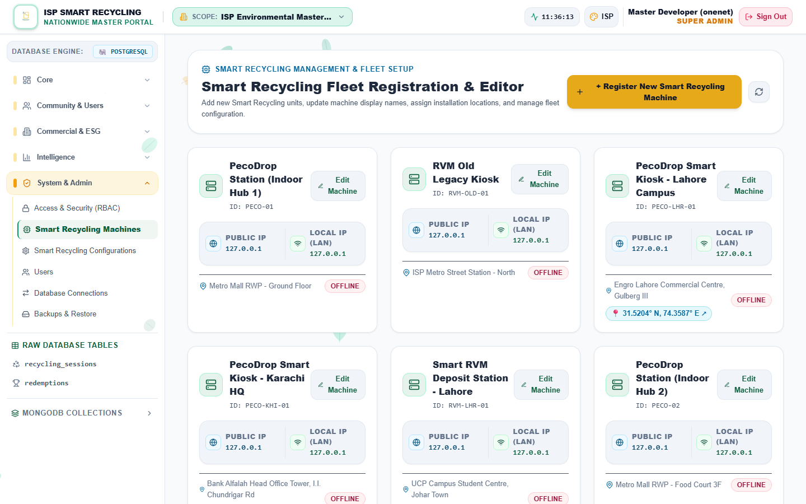
Figure 14 – "Smart Recycling Fleet Registration & Editor".
+ Register New Smart Recycling Machine (ISP admins): Machine ID (e.g. RVM-001 or PECO-LHR-01; must match the kiosk's config.txt MachineId), Name, Location, Latitude / Longitude, Type (RVM New (Multi-Sensor Optical) / PecoDrop (Count & Weigh) / RVM Old (Legacy Pulse)), Client (ISP Environmental Master or an organization), Status (ONLINE (Active) / MAINTENANCE (Under Repair) / OFFLINE (Inactive)). The type is auto-detected from "PECO" or "OLD" in the ID when not set; unassigned machines belong to ISP_MASTER. Edit Machine on each card updates the same fields. A kiosk whose ID is not registered receives "not registered / unauthorized" on its heartbeat and shows UNAUTHORIZED on screen.
16. Smart Recycling Configurations (point rules)
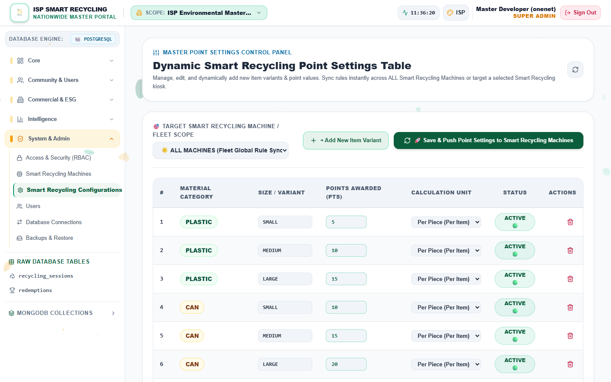
Figure 15 – "Dynamic Smart Recycling Point Settings Table".
- Choose "🌟 ALL MACHINES (Fleet Global Rule Sync)" or a single machine. Table columns: Material Category, Size / Variant, Points Awarded (pts), Calculation Unit (Per Piece / Per Gram / Per Kilogram), Status, Actions.
- + Add New Item Variant: materials PLASTIC, CAN, CUP, TETRA PAK, GLASS, PAPER, CUSTOM; sizes SMALL / MEDIUM / LARGE / CUSTOM.
- Defaults: PLASTIC 5 / 10 / 15, CAN 10 / 15 / 20, TETRA PAK 5 / 10 / 15, GLASS 10 / 15 / 20, PAPER 15 per kg.
- Save & Push (ISP admins): a fleet-wide save writes the rule set to every registered machine and becomes the global default; a single-machine save changes only that machine. Kiosks pick up the new rules on their next 15-second config poll and apply them to subsequent deposits.
17. Users and Raw Database Tables
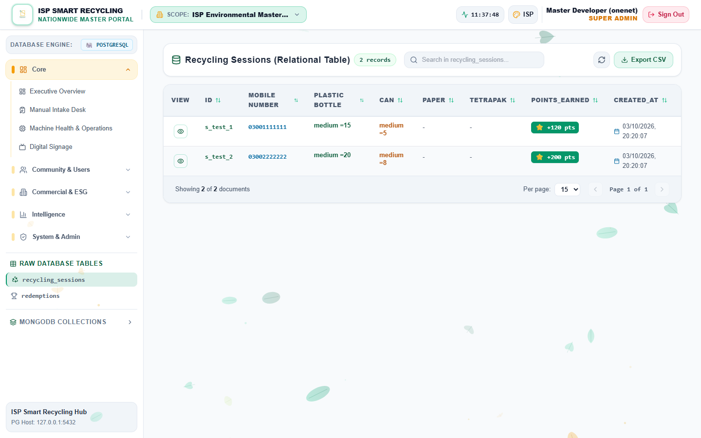
Figure 16 – Raw table view "Recycling Sessions (Relational Table)".
- Users (System & Admin) shows the recycler directory together with the raw users table.
- Raw Database Tables (super admin): recycling_sessions and redemptions, with search, sortable columns, 10 / 15 / 25 / 50 rows per page, Refresh Table Data, Export CSV and a per-row View JSON inspector. Tables containing personal data or credentials are restricted to ISP administrators and never show password fields.
18. Database Connections
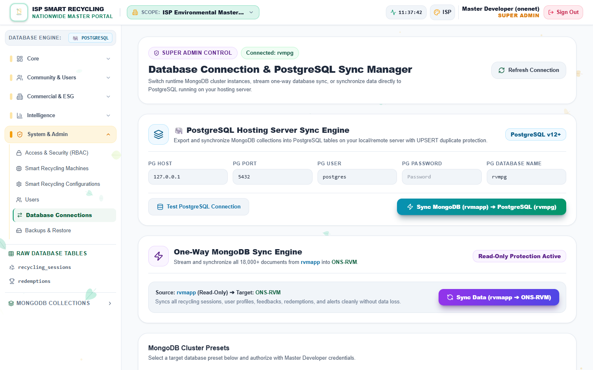
Figure 17 – "Database Connection & PostgreSQL Sync Manager".
- Super admin only, and every action also requires the Master Developer Authorization username and password (configured on the server, never stored in the browser).
- PostgreSQL Hosting Server Sync Engine: PG Host / Port / User / Password / Database Name → Test Connection, Sync MongoDB → PostgreSQL.
- MongoDB Cluster Presets: ONS-RVM Master Cluster, MCSRWP Production rvmapp Cluster, PostgreSQL Dedicated Hosting Database → Switch (changes the runtime engine and persists it to the server's environment file), Restart API Server, and the One-Way MongoDB Sync Engine rvmapp → ONS-RVM. MongoDB is a read-only legacy source; PostgreSQL is the production system of record.
19. Backups & Restore
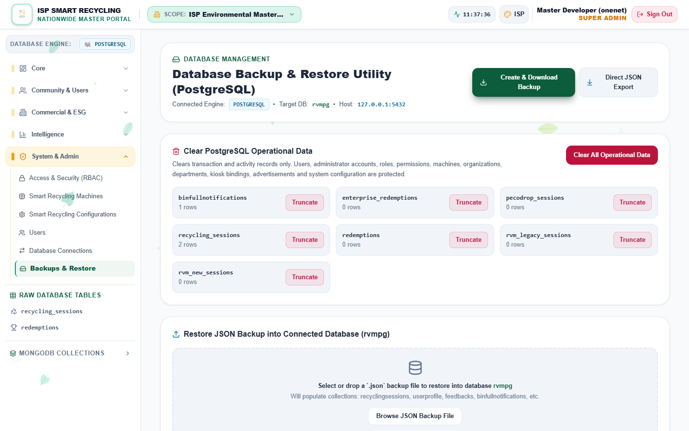
Figure 18 – "Database Backup & Restore Utility (PostgreSQL)".
- Create & Download Backup produces a JSON snapshot of all collections and stores it on the server; the list shows Backup Filename, Created Date, File Size and Actions (download, restore).
- Restore from a stored snapshot or an uploaded .json file (mode replace). Restores run inside a transaction and only touch JSON document tables; typed relational tables are skipped and reported. Restoring onto the legacy rvmapp source is refused.
- Clear Operational Data (super admin, PostgreSQL only): choose all tables or one table, type the confirmation phrase exactly ("CLEAR ALL OPERATIONAL DATA" or "TRUNCATE <table>") and enter the database-reset authorization credentials. Every reset is written to the database_reset_audit table. Take a backup first.
20. How the kiosks talk to the portal
| Exchange | What happens |
|---|
| Registration | ISP registers the machine ID (section 15). The kiosk's config.txt carries the same MachineId, the portal URL and the KioskApiKey issued by ISP (sent on every request as the x-kiosk-key header once key enforcement is switched on). |
| Heartbeat (every 15 s) | Status (ONLINE / IN_SESSION / BIN_FULL / WARNING / ERROR), bin fill levels (PecoDrop reports plastic / metal / paper; public RVM reports its status), location, IP. Missing heartbeats for more than 60 s = OFFLINE. |
| Configuration pull (every 15 s) | Machine name and point rules from Smart Recycling Configurations / Machine Health. |
| Sessions | Each accepted item is posted with the cumulative counts of the session; the final post carries the claiming recycler. Points are credited once per session to the recycler and machine totals are incremented by the difference. Feedback ratings are posted separately. |
| Touchless start and claim | Kiosk registers a start token (QR valid about 2 minutes, refreshed every 110 s); the app or claim page starts the session; after the session the kiosk creates a 90-second claim QR that credits the scanning account. |
| Signage | Playlist pulled every 15 s (section 8). |
| Leaderboard | PecoDrop kiosks show their organization's ranking; public RVMs show the local top 10. |
| Corporate binding | Enterprise Accounts → Personalize Fleet → Assign Kiosks (section 11.2). A bound PecoDrop scopes its leaderboard and the client's dashboards to that organization. |
21. Citizen and employee channels
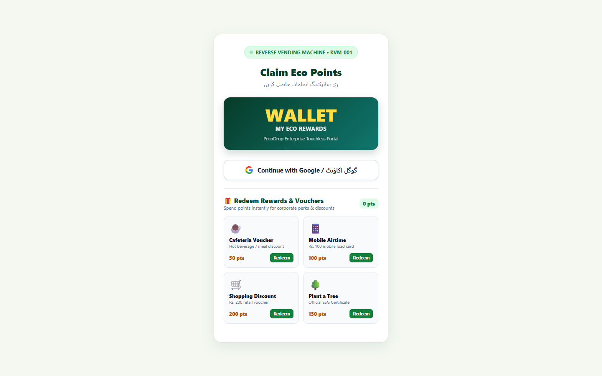
Figure 19 – Touchless claim page (/claim) with "Continue with Google" and the reward catalogue.
- Trash to Cash app (Android): registration with mobile number, Google sign-in, QR scanner for the kiosk start and claim codes, balance, history, leaderboard, rewards. Employees of a corporate client are recognised automatically when they sign in with a work email whose domain matches the organization; otherwise they link in Profile → Corporate Membership with the Company Code (shown on the client card) and their Staff ID.
- Touchless claim page /claim: opened by scanning a kiosk QR with any phone camera; asks for the mobile number or a Google-verified email (6-digit code by email), starts or claims the session and shows the reward catalogue (Cafeteria Voucher 50 pts, Mobile Airtime 100, Shopping Discount 200, Plant a Tree 150 – configurable).
- Scanner page /scanner: a browser QR scanner for devices with a camera.
22. Standard operating procedures (A to Z)
- Commission a new kiosk. Smart Recycling Machines → Register (ID, type, location, client) → give the installer the MachineId, portal URL and KioskApiKey for config.txt → wait for the first heartbeat in Machine Health → set point rules (Configurations) → assign signage (Digital Signage) → for PecoDrop, bind the kiosk to the client (Enterprise Accounts).
- Onboard a corporate client. Enterprise Accounts → create organization → Personalize Fleet: assign kiosks, set branding and theme, create the Corporate Client Lead Administrator → Depts & Roster: add departments and import the staff roster → send the client the Corporate Client Dashboard Guide and their credentials.
- Change point rules. Configurations → ALL MACHINES or one machine → edit → Save & Push. Confirm on a kiosk after 15 s.
- Publish a video campaign. Digital Signage → Upload New Video Ad → choose target → Push to Screen(s). Use Sync All Displays if a kiosk lags.
- Handle a bin-full alert. Machine Health shows Bin Full / Needs Action → dispatch the site team (your ticketing system) → after emptying, the next heartbeat clears the flag (public RVMs need the operator to press 0 on the kiosk).
- Credit a recycler manually. Manual Intake Desk (section 6).
- Pay out points. Rewards & Leaderboards → Payout → method, amount, Dispatch → execute the transfer with finance using the reference code.
- Create a staff login. Access & Security → Create User & Assign Role → choose role and machine scope.
- Suspend or remove a user. Access & Security → Edit → Status Suspended, or Delete.
- Produce ESG evidence. ESG & Carbon Impact → Export ESG Audit (PDF) or CSV; Enterprise Accounts → Print ESG Certificate for a client.
- Back up before risky changes. Backups & Restore → Create & Download Backup; keep the file off-server.
- Remove a client. Enterprise Accounts → trash icon (super admin) → confirm. Kiosks return to ISP Environmental Master automatically.
23. Security and governance rules
- Authorisation is decided by the server from the signed session token only; the browser cannot claim a role.
- Super admin only: create / delete organizations, assign kiosks, create client admins, fleet-wide point rules, Sync All Displays, overdraft payouts, Database Connections, Backups & Restore, raw tables, creating other super admins.
- Client admins and sub-users are confined to their organization's kiosks, staff and campaigns on every tab and API.
- Kiosks authenticate with the shared KioskApiKey; the mobile app authenticates with the user's session token. Both are enforced by server settings controlled by ISP.
- Secrets (database passwords, session secret, master credentials, kiosk key) live only in the server's environment file; rotate them if they are ever exposed.
- Exports contain personal data (phone numbers, emails). Handle CSV files according to ISP's data-protection policy.
24. Troubleshooting
| Symptom | Action |
|---|
| Login fails with "Invalid username or password" | Check username / email; ask a super admin to reset the password in Access & Security. Repeated failures are rate-limited for 5 minutes. |
| "Your Corporate Client account is pending approval" | The client admin was created through self-registration; ISP must approve it (section 11) or recreate it from Personalize Fleet. |
| A menu item is missing | The role lacks that module. Edit the role in Role Access Matrix or assign another role. |
| Kiosk shows OFFLINE in Machine Health | No heartbeat for 60 s: check the kiosk's internet, its MachineId / KioskApiKey, and that it is registered. |
| Kiosk header shows UNAUTHORIZED | Machine ID not registered or key mismatch. Register the machine; verify the key in config.txt. |
| New point rules not applied | Wait 15 s; confirm the kiosk is online; check whether a per-machine rule overrides the fleet rule. |
| Video not playing on a kiosk | Confirm the campaign is pushed to that kiosk's destinations; use Sync All Displays; check the kiosk's Ads folder from its Admin panel. |
| Client admin cannot see a kiosk | Bind it in Personalize Fleet → Assign Kiosks; the admin must sign out and in again. |
| Recycler says points are missing | Recycler Community → open the user → session history; cross-check Machine Health counters and the kiosk's transaction log; credit via Manual Intake if justified. |
| Session expired unexpectedly | Sessions last 24 h; a 401 from the server (expired or rotated token) returns you to the login card. |
25. Glossary
| Term | Meaning |
|---|
| ISP Environmental Master (ISP_MASTER) | The default owner of every machine not bound to a corporate client. |
| Company Code | The organization ID without its ORG_ prefix; employees enter it in the mobile app to link their account. |
| Machine types | RVM_NEW Smart RVM (multi-sensor optical), RVM_OLD legacy pulse counter, PECODROP count-and-weigh enterprise kiosk. |
| Machine status | ONLINE (heartbeat ≤ 60 s), OFFLINE, IN_SESSION, BIN_FULL, WARNING (smoke sensor), ERROR / Fault, MAINTENANCE. |
| Alerts | HIGH_BIN_FILL ≥ 80 %, CRITICAL_BIN_FULL ≥ 95 %. |
| Points / PKR | 5 points = PKR 1; 1,000 points ≈ PKR 200 voucher value. |
| Weights | Bottle 0.025 kg, can 0.015 kg, carton 0.02 kg, glass 0.2 kg; paper measured by the PecoDrop load cell. |
| CO₂e factors | Plastic 1.50, Aluminium 9.10, Paper 2.90, Tetra / cardboard 3.10, Organic 0.50 kg CO₂e per kg; trees = kg CO₂e ÷ 21.77; vehicle miles = kg CO₂e ÷ 0.40. |
| Account status | active, pending_approval, suspended. |
| Modules | The menu capabilities attached to a role (overview, analytics, machines, advertisements, mobile_users, enterprise_clients, esg_impact, reporting_hub, security, sub_users, manual_intake, users, db_switcher, db_backup). |